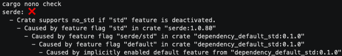
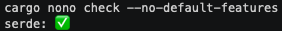

## cargo-nono The pitfals of `#![no_std]` and how `cargo-nono` can help you avoid them
<h4>What is this <code>#![no_std]</code> thing? <span class="fragment">Why should I care?</span></h4> <div class="fragment"> - <code>#![no_std]</code> is a crate-wide attribute <code>#![...]</code> </div> <div class="fragment"> - Rust with no... std... (= standard library) </div> <div class="fragment"> - `std` has a lot of nice stuff: collections, io, fs, etc. </div>
### Why would you not want to use std? <div class="fragment"> because your target platform doesn't let you :/ </div> <div class="fragment"> - embedded (microcontrollers, etc.) </div> <div class="fragment"> - (WASM) </div> <div class="fragment"> - other more exotic targets </div> <div class="fragment"> - highly-portable code in general! </div>
### Then "just don't use it"!
<ul style="text-align: center;"> <li class="fragment"> `cargo new --bin my-fancy-new-crate` </li> <li class="fragment"> Add `#![no_std]` to top of `main.rs` </li> <li class="fragment"> Add e.g. `serde` as a dependency </li> <li class="fragment"> `cargo build --target thumbv7em-none-eabi` </li> <li class="fragment"> 💥 (cryptic error that's hard to locate) </li> </ul>
### Problem #1 "std infection" - Any of your dependencies or sub-dependencies can cause std to be included, **and will do so by default via prelude** - And `#![no_std]` doesn't prevent that! - **Every** dependency has to have `#![no_std]` active - So have fun screening all your dependencies...
### Extreme example: ref_eq <div class="fragment"> - Simple crate to: "Determine if two borrowed pointers point to the same thing." </div> <div class="fragment"> - 4 lines of code </div> <div class="fragment"> - Has a fork that adds the `no_std` attribute </div>
### `cargo-nono` to the rescue! 
- Let's introduce some feature flags to our crate ``` [dependencies] serde = { version = "1.0.80", default-features = false } [features] default = ["serde/std"] ``` - And use them: 
### BTS: Code parsing & resolving feature toggles - Detect - `#![no_std]` - `#![cfg_attr(not(feature = "std"), no_std)]` - or similar by parsing code with `syn` crate
### BTS: Code parsing & resolving feature toggles - Check whether the required feature is actually active by resolving the features of all dependencies - Also had to replicate "buggy" behaviour: cargo#5730 - "Features of dependencies are enabled if they're enabled in build-dependencies"
### Pain point: Cargo <div class="fragment"> - Cargo is a huge monolithic dependency (no feature toggles) - Cargo is not built to be used as a library in cargo subcommands - So right now: `cargo metadata` + building your own algo </div>
### Problem #2: "My library is building" <div class="fragment"> - When building library crates, you don't get any feedback if your build will work for `#![no_std]` targets </div>
### cargo-nono tries to help ```none - Did not find a #![no_std] attribute or a... ```
### cargo-nono tries to help ```none --> src/main.rs:3:4 | 3 |use std::ops::Add; | ^^^^^^^^^^^^^ help: Try replacing `std::ops::Add` with `core::ops::Add`. ```
### BTS: Code parsing & Rust documentation <div class="fragment"> - Rust installation comes with docs by default: `rustup which rustdoc` - Check if there is a `core` equivalent for `std` </div>
### Caveats 😬 - **Very** heuristics dependent - e.g. breaks down with very complex `#![cfg_attr(all(not(...), ...))]` - Seems to work well with randomly sampled crates though
### The future! <div class="fragment"> - WIP feature to check build artifacts for `std` symbols - less heuristics, yay! - relies on nightly though (for now) </div> <div class="fragment"> - `std`-aware Cargo: RFC#2663 </div>
### Thoughts - Proper solutions can take a long time to arrive - No shame in building/using hacky ones in the meantime - and advertising them (see also cargo-deadlinks 😉)
### Contributors & Co-maintainers welcome! <div class="fragment"> @hobofan on Github/Twitter - I'm available as a freelancer from time to time </div>